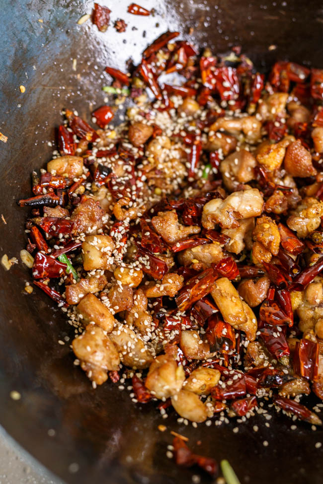

Mala Chicken

Description
This dish is the fucking BOMB. You can find this at any legit sichuan chinese restaurant and it's always fire (both in terms of taste and heat.
Don't let the presence of the many red chilis frighten you away - it's easy enough to eat around them and they (along with szechuan peppercorn) provide the perfect balance of spice and numbing flavor to the dish
Ingredients
- 4 chicken thighs
- 1.5 cups chili peppers
- 1.5 tbsp. Sichuan peppercorn
- 1 root ginger, sliced
Steps
- Cube chicken and fry in hot oil until golden brown
- Remove chicken and transfer to paper towel lined plate
- Fry the chili peppers & sichuan peppercorn in oil for 1-2 minutes
- Add ginger, scallion, and garlic and fry until aromatic
- Add in cooked chicken and stir to combine